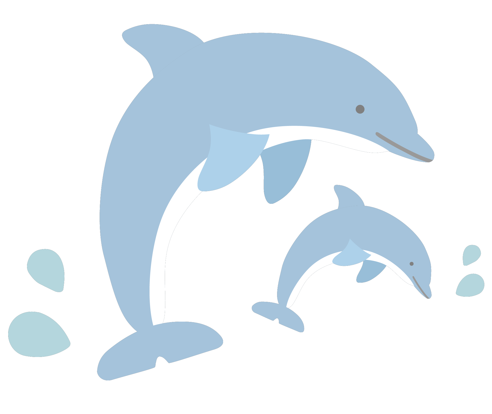
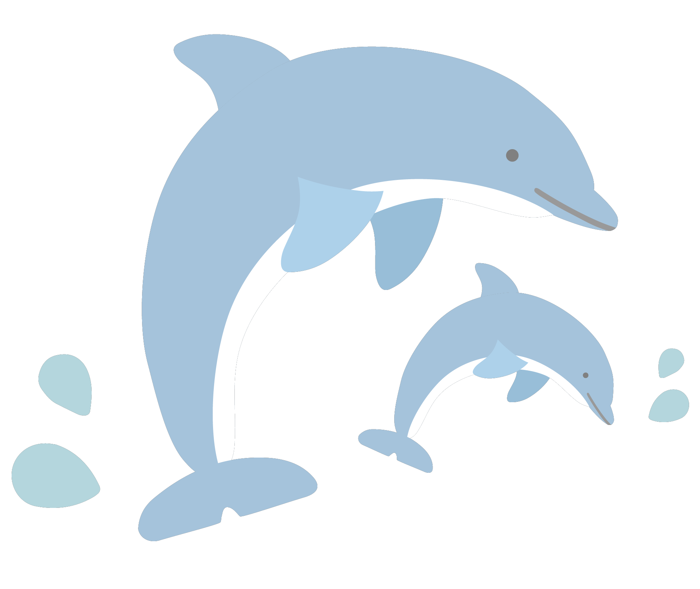

Go West !
제주도 서쪽 맛집
TOP10


 

"지도에서 '동서남북' 위치를 클릭해보세요. 지역 맛집으로 안내합니다"
"저 고등어회 안좋아하거든요..? 근데 나 고등어회 좋아하네.. 이틀 연속으로 먹었어요 ㅠㅠ 비린내도 전혀 없고 부드럽게 잘 넘어가요 !! 쌈장이랑 같이 먹으면 완전 찰떡! "
"문어숙회가 진짜 맛있고! 문어라면이 진짜 최고!! 맛도 좋고 바다 보면서 먹으니까 기분 끝내줍니다 ㅎㅎ 웨이팅 있긴해도 사장님이 바람피할 곳으로 안내도 해주시고 ㅠㅠ 친절하셔서 더 기분좋게 기다릴 수 있었습니다!!"
"오션뷰에서 고등어 쌈밥을 먹을 수 있어요! 고등어가 밥도둑이라 다른반찬은 필요 없더라구요!! 어머니도 대만족했어용 ㅎㅎ 가족모임 할만한 큰 자리도 많아서 대가족 밥 먹을때 딱 인것 같아요 !! 넘 맛나게 잘 먹었습니다 ㅎㅎ 무엇보다 묵은지 최고 !"
"진자 줜나 맛있음. 제주도 3번 가면 2번은 꼭 감. 마지막날 장인의 집 아점을 먹고 애월에 바다멍 때리다가 비행기 타고 집가는 코스를 추천함. 가족 여행으로 16명 데리고 갔는데 전부 다 맛있다고 가성비가 좋다고 다음에 올 때 지인데리고 와야겠다고 함. 무조건 예약하고 오셈!!"
"문어랑 갈비가 매우 부드러워서 어른들 드시기도 좋다고 하시더라구여 ㅎㅎ 가격대비 해산물 진짜 많고 볶음밥 놓칠 수 없어 볶음밥까지 긁어먹고 왔어요 ㅠㅠ 다음 제주 여행때도 무조건 가려구요"
"갈치조림 인생 맛집이에요 ㅠㅠ 냉동 아닌 생물 갈치라서 엄청 부드러워요! 울엄마도 첨 먹어보는 부드러움이라고 했어영. 다듀 최자가 다녀간 식당으로 유명한데.. 다듀에서 개코를 더 좋아했었습니다. 제주도에서 눈탱이 안맞는 솔직함과 맛으로 부터 더이상 다듀는 개코 한명이 아니란 것을 이해하였습니다.ㅋ 대문집 짱! 존맛탱.. 다듀 앞으로도 음식으로 세상을 이롭게 해주세요 ~!!!"
"들어가자마자 눈앞에 펼쳐지는 야자나무의 뷰가 환상이었고 쫀득함에 한번 놀라고 육즙에 두번 놀랐습니다 ㅎㅎ 고기도 처음부터 끝까지 구워주셔서 편하게 먹었어요 !! 어마가 더 좋아하셔서 뿌듯했습니다!! 흑돼지 맛집 찾고계시다면 제주 별돈별 정원본점 강추드립니다!"
"말해 뭐해! 위치, 뷰, 음식까지 완벽 그 자체! 가족여행으로 예약하고 다녀왔어요! 갈치솥밥은 가시가 다 발라져 있고 전복솥밥은 엄청 꼬소하고 맛있어요. 남동생이 솥까지 싹싹 긁어 먹었어요 ㅋㅋ 물회도 별로 안좋아하는데 이건 코박고 먹었어요 ㅋㅋㅋㅋ 뷰는 그냥 미쳤음 "
"평소에 계란비린내 때문에 에그타르트를 좋아하지 않음에도 불구하고 비린내가 전혀 없고 한입 베어먹는 순간 눈이 돌아가는 집입니다. 타르트 맛집 + 소품샵 겹 카페라서 보는 맛도 있어요 ㅠㅠ 에그타르트 후회하지 마시고 10개 사시길.... 콘타르트 10개 사먹기 다들 빨리 메모 메모..."
"제주도 왔으니 말차 함 먹어야지 생각하고 있었는데 오설록 보다 여기가 훨씬 진하다고 해서 찾아왔어요 ㅎㅎ 결론은 찐말차라떼 한잔 잘 마시고 갑시다 ㅎㅎ 건물도 멋있고 커서 완전 좋아여!!! 강추"